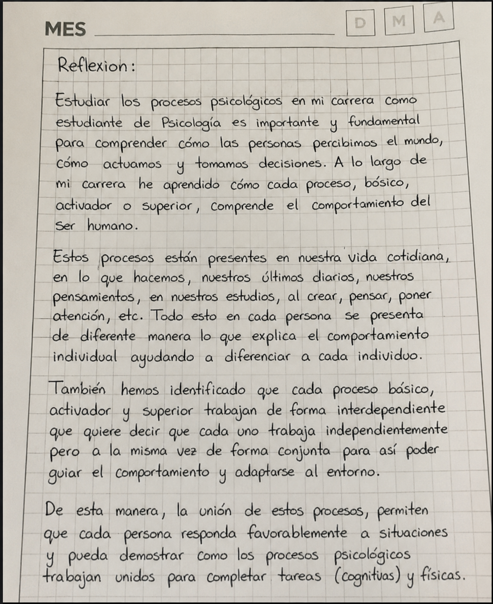

Procesos Psicológicos

Los procesos psicológicos permiten comprender cómo las personas interpretan el entorno, reaccionan y toman decisiones. Los procesos psicológicos básicos, los activadores de la conducta humana y los procesos psicológicos, trabajan de forma independiente, pero de manera conjunta para guiar el comportamiento y la adaptarse al entorno. Los procesos psicológicos básicos como la percepción permiten captar e interpretar la información que viene a través de los sentidos. Los activadores como la motivación a partir de esa información impulsan a la persona a actuar para alcanzar metas o satisfacer necesidades. Por ultimo los procesos superiores como el pensamiento, ayudan analizar la información, resolver problemas, tomar decisiones y ejecutar acciones
Analizar cómo interactúan la percepción, la motivación y el pensamiento en situaciones cotidianas, mediante actividades interactivas que permitan comprender su influencia en la conducta humana.
El participante deberá realizar 4 actividades interactivas de razonamiento logico, pensamiento, diseñadas para analizar la relación entre los procesos psicologicos, principalmente (percepcion, motivacion y pensamiento. Cada actividad debe completarse siguiendo las indicaciones. Al final, se reflexiona sobre cómo estos procesos influyen en la conducta humana.
| Proceso | Definición Breve | Ejemplo en la Wiki |
|---|---|---|
| Percepción | Organización e interpretación de estímulos sensoriales. |
|
| Motivación | Impulso interno que mueve a la acción del usuario. |
|
| Pensamiento | Procesamiento mental de la información para analizar y resolver problemas. |
|
¿Qué proceso interpreta los estímulos del entorno?
Analiza y continua la secuencia
5 → 8 → 16 → 19 → 38 → 41 → ?
Relaciona cada proceso psicológico con su definición correcta:
Lee la historia y analiza lo que ocurre:
"Un estudiante caminaba solo por el bosque de noche. De repente percibió un estímulo visual ambiguo entre los árboles. Su primera reacción fue de alerta, pero luego decidió acercarse para interpretarlo mejor."
💡 Pista: Piensa en los procesos psicológicos básicos que intervienen cuando algo no es claro y genera duda.

Los procesos psicológicos trabajan juntos en la vida diaria. En esta actividad se evidenció la relación entre los procesos psicológicos básicos, los activadores de la conducta y funciones mentales superiores en la conducta humana. A través de los retos propuestos, se logró analizar cómo la atención, la memoria y el pensamiento interactúan en la resolución de tareas cotidianas